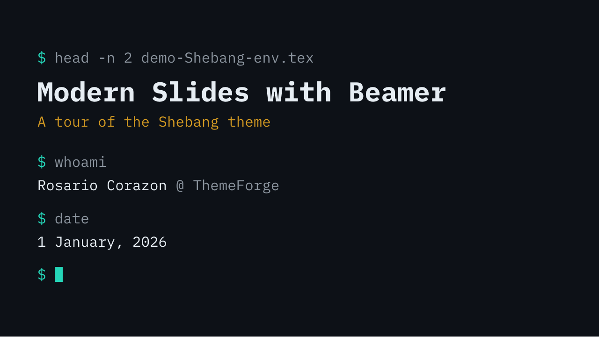
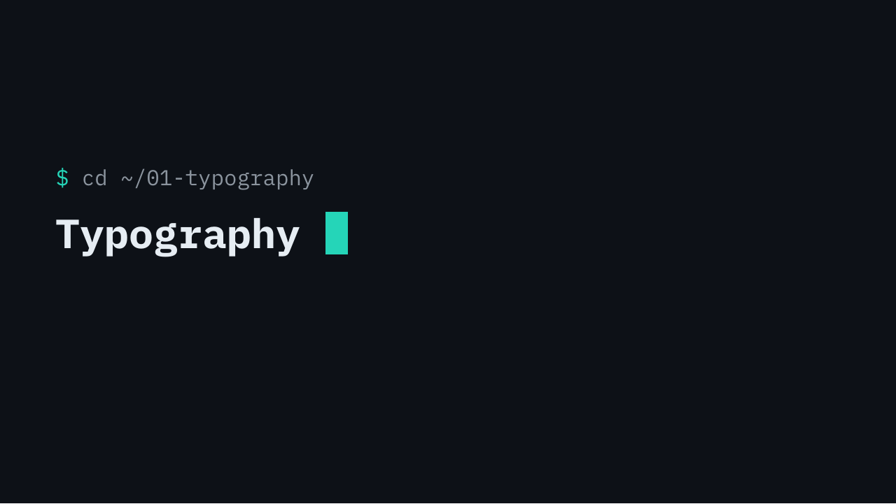
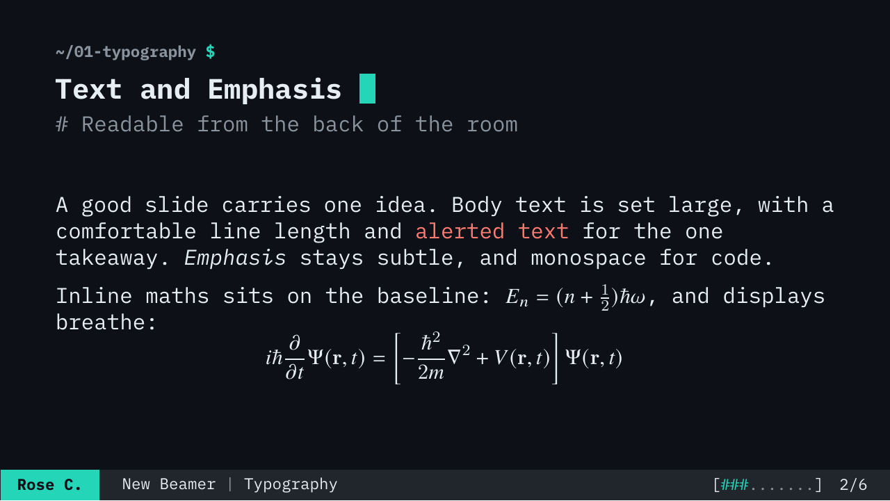
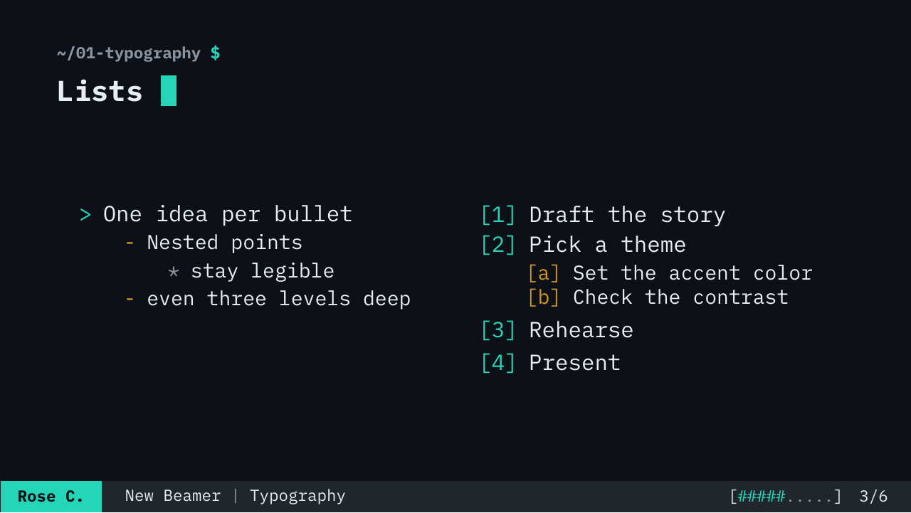
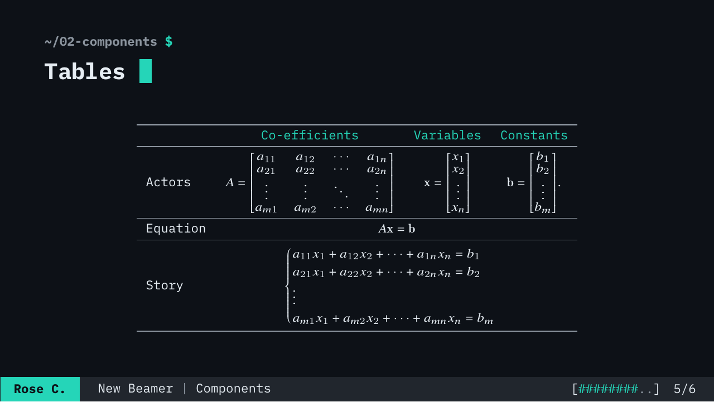
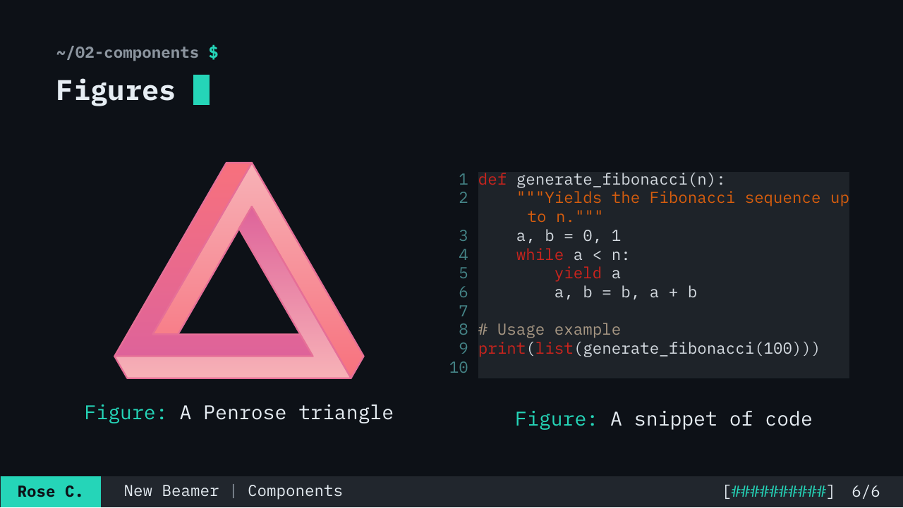
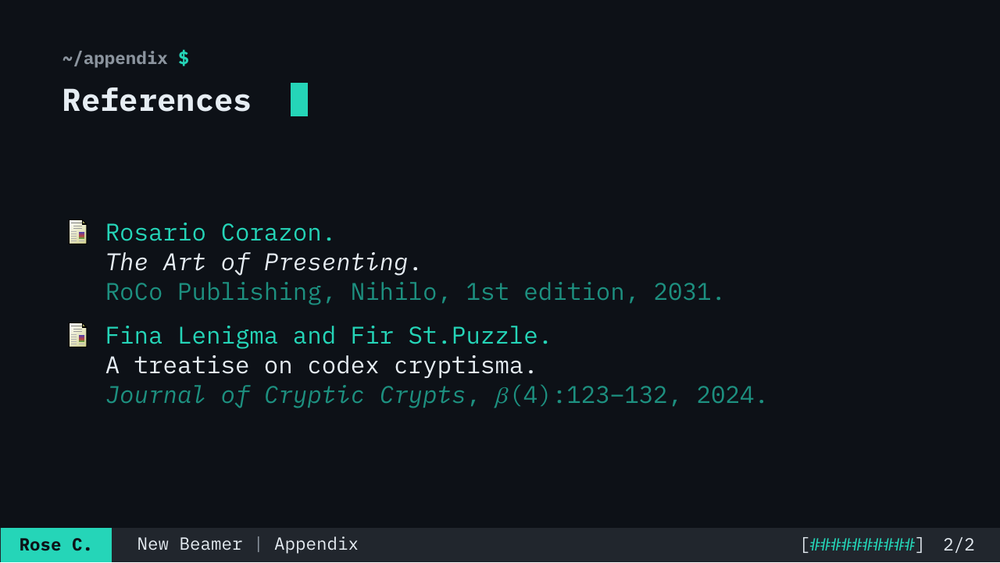
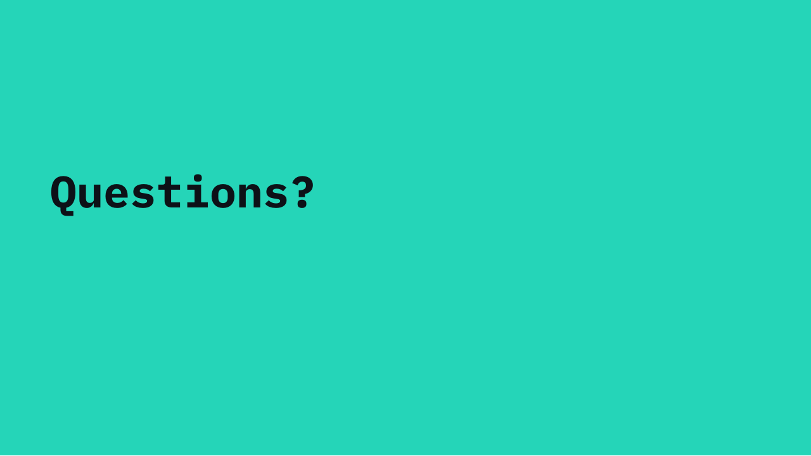

Shebang
Version 0.1 · November 2026
A monospace theme that reads like a terminal session: a prompt above every frame title, box-drawn blocks and a status bar. Comes in three variants, with a customizable accent colour.
Inside the deck
















Compiled with default variant (env). Click a slide to enlarge it.
Try an accent colour
~/01-colours $
Picking an accent
# Readable from the back of the room
- Everything on a slide is meant to be seen.
- Room lighting changes what stands out.
- AaInk on paper
- AaAccent on paper
- AaComment on paper
- AaText on accent
Customise the accent colour
Use it
Put the theme file next to your .tex file, then add this line after \documentclass{beamer}:
\usetheme{Shebang}Your file name on the title page
The title page opens with a command that prints the top of your file. Shebang fills in the file name by itself, so type yours to see how it looks.
$ head -n 2 talk.tex
Modern Slides with Beamer
A tour of the Shebang theme
$ whoami
Rosario Corazon @ ThemeForge
$ date
1 January, 2026
$
Names with a space are shown in single quotes. To show a different name, add \shebangfile{name.tex} to your preamble.